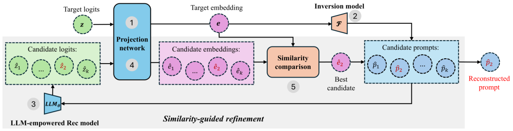

Privacy Risks of LLM-Empowered Recommender Systems: An Inversion Attack Perspective (LLM 赋能推荐系统的隐私风险：反演攻击视角)
- 会议/期刊: ACM RecSys 2025
- 作者与机构: Yubo Wang, Min Tang, Nuo Shen, Shujie Cui, Weiqing Wang（Monash University）
- 推荐链路定位: 端到端生成式（LLM 推理服务侧）
- 研究方向: 去偏公平、可信隐私与工业架构 / 大语言模型推荐
- 论文原文: https://arxiv.org/abs/2508.03703v2
- 开源代码: https://github.com/xuemingxxx/Attack_RecSys
TL;DR (1分钟核心速览)
LLM 赋能推荐系统把用户画像、交互历史全部塞进 prompt，而系统回传给推荐服务做后处理的 logits 成为新的泄露面。本文首次系统研究该场景下的反演攻击：复现 vec2text 框架，并用 Similarity-Guided Refinement（相似度引导精炼） 以 beam search 生成候选、回灌受害模型比对余弦相似度迭代收敛。在 Movie/Book 两域、TallRec/CoLLM 两模型上，可恢复近 65% 交互物品、87% 年龄性别推断正确，文本相似度指标普遍超 85%（Movie-TallRec）。
Background & Motivation (背景与核心矛盾)
- 主流范式: P5/TallRec/CoLLM 等把指令、上下文、用户画像 \(P_i\)与历史交互\(V_{ui}\)拼成完整 prompt\(P=[P_{task};P_{context};P_i;V_{ui}]\)，由 LLM 自回归输出推荐。
- 前人局限: 已有攻击（CheatAgent 篡改文本提曝光、Ning 等投毒 1% 训练数据）只关心推荐准确率被破坏，完全忽略隐私；而通用 LLM 反演研究依赖语义丰富的输出文本，推荐任务常输出 "Yes/No" 这类稀疏短响应，输出级反演直接失效。
- 核心洞察 (Key Insight): 推荐系统为后处理会把 next-token logits 回传，而 logits 中残留的输入信息与输出语义丰富度无关——即便推荐质量下降，logits 仍编码输入细节。
- 本文切入点: 用 logits 级反演替代输出级反演，把"逐 token 生成合理序列"重构为"在高维 logit 空间定位最接近真实分布的点"。
Method (核心方法设计)
1. 整体框架 (Overall Architecture)
攻击者仅黑盒访问受害推荐接口，可大量查询并截获 logits。流程为：目标 prompt 的 logits \(\mathbf{z}\)先经投影网络对齐到反演模型词表，得到定长嵌入\(\mathbf{e}\in\mathbb{R}^{B\times T\times d}\)；T5-base 反演器\(\mathcal{F}\)将\(\mathbf{e}\)解码为候选 prompt 集合；候选回灌受害模型与投影网络得到各自嵌入，用余弦相似度与\(\mathbf{e}\) 比对，最接近者作为最终重建。训练语料由合成流水线在与受害模型训练集不相交的公开数据上生成，模拟真实黑盒场景。
flowchart TD
A["截获目标 prompt logits z"] --> B["投影网络 → 嵌入 e"]
B --> C["vec2text 反演器 F → K 个候选 prompt"]
C --> D["候选回灌受害 LLM + 投影网络"]
D --> E["余弦相似度比对，选最优候选"]
E -->|未收敛| C
E --> F["输出重建 prompt"]
2. 关键设计拆解 (Key Designs)
-
域对齐合成语料流水线（Domain-Aligned Synthetic Corpus）：通用 one-million-instructions 语料训练的反演器在推荐域 ItemMatch≈0，因为测试 prompt 含大量 OOV 物品标题，低阶 logits 统计与训练词槽映射崩塌。作者按 userId 分组、按时间倒序、以阈值 \(k\)划分偏好/非偏好、每 prompt 采样至多\(n\) 个标题，覆盖二分类/直接推荐/序列/评分预测/冷启动五类任务各 10+ 模板，Movie 与 Book 各生成 150 万条 prompt。直觉：恢复 logits 到 prompt 空间的映射，前提是训练分布与受害域词表对齐。
-
相似度引导精炼（Similarity-Guided Refinement）：基础反演只输出"看似合理"的序列，缺乏对真实分布的全局校验。每轮以 beam width \(K=5\) 生成候选，选与目标嵌入余弦相似度最大者： $\(\hat{P}^{(t+1)}=\arg\max_{1\le k\le K}\cos\big(LLM_\theta(\hat{P}^{(t)}_k),\ \mathbf{e}\big)\)$ 当相邻两轮相似度增益低于 \(\epsilon=10^{-5}\) 即停止（多数样本 2 轮内收敛）。物理直觉：把生成问题转为嵌入空间最近点搜索，用受害模型自身作为"真值裁判"，纠正逐 token 贪心带来的语义漂移。
-
训练目标与开销：反演器以标准 seq2seq 负对数似然训练（T5-base，222M 参数，lr \(2\times10^{-4}\)，bf16，最多 50 epoch，按验证集 ItemMatch 早停）。攻击无需负采样；在线开销为每样本\(K\) 次受害模型前向 + 1 次反演解码，2 轮内收敛使成本可控，但仍是查询密集型攻击。
Experimental Setup & Evaluation Protocol (实验设置与评估协议)
- 数据集与预处理: 受害模型训练用 ML-1M 与 Amazon Books Reviews（300 万评分/21.2 万书），按 80/10/10 划分；反演语料另用 ML-25M/ML-32M 与 Kaggle 1M Users Book Ratings/Goodreads 构造，与受害训练集严格不相交，测试集仅用于评估攻击。
| 数据集 | 角色 | 规模/说明 | 备注 |
|---|---|---|---|
| ML-1M | 受害模型训练 | 电影评分 | 80/10/10 划分 |
| Amazon Books | 受害模型训练 | 3M 评分 / 212K 书 | 80/10/10 划分 |
| InvInst_movie | 反演训练 | 150 万 prompt | \(k=4\)，\(n\sim U(3,11)\) |
| InvInst_book | 反演训练 | 150 万 prompt | 同上 |
- 数据划分与防穿越: 比例划分（80/10/10）；反演语料与受害训练数据来源隔离，测试集对反演模型不可见。
- 排名评测协议: 非排名任务，采用文本生成指标 BLEU / ROUGE-L / Token-level F1，外加两个推荐定制指标：\(\text{ItemMatch}=|T\cap\hat{T}|/|T|\)（无序物品召回率）与\(\text{ProfileMatch}=N_{correct}/N_{total}\)（年龄+性别同时精确恢复比例）。
- 对比基线与超参: 基线为 Generic（LLaMA logits 上训练的原始 vec2text）与 Generic-Rec（同语料换受害模型 logits 微调）；本文 RecAtk-Spec / RecAtk-Refined。反演器统一 T5-base，beam \(K=5\)，\(\epsilon=10^{-5}\)。
Key Experimental Results (实验关键数据)
1. 主实验对比 (Main Results)
攻击 TallRec（Movie / Book）：
| 模型 | ItemMatch | ProfileMatch | BLEU | ROUGE | F1 |
|---|---|---|---|---|---|
| Generic | 0.0011 / 0.0015 | 0 / 0 | 1.52 / 1.43 | 0.144 / 0.158 | 0.199 / 0.192 |
| Generic-Rec | 0 / 0.0004 | 0 / 0 | 1.61 / 1.53 | 0.175 / 0.198 | 0.227 / 0.231 |
| RecAtk-Spec | 0.6086 / 0.3277 | 0.8550 / 0.8337 | 84.89 / 70.36 | 0.915 / 0.780 | 0.906 / 0.767 |
| RecAtk-Refined | 0.6471 / 0.3463 | 0.87 / 0.8337 | 85.84 / 70.44 | 0.924 / 0.782 | 0.918 / 0.768 |
攻击 CoLLM（Movie / Book）：
| 模型 | ItemMatch | ProfileMatch | BLEU | ROUGE | F1 |
|---|---|---|---|---|---|
| Generic | 0.0014 / 0.0036 | 0 / 0 | 2.12 / 2.56 | 0.136 / 0.160 | 0.187 / 0.196 |
| Generic-Rec | 0.0001 / 0.0002 | 0 / 0 | 1.36 / 1.44 | 0.153 / 0.177 | 0.203 / 0.212 |
| RecAtk-Spec | 0.4741 / 0.2297 | 0.4463 / 0.2110 | 66.38 / 51.06 | 0.760 / 0.627 | 0.766 / 0.652 |
| RecAtk-Refined | 0.5125 / 0.2612 | 0.5012 / 0.2830 | 67.58 / 53.16 | 0.770 / 0.647 | 0.776 / 0.663 |
2. 消融实验 (Ablation Study)
Movie 域、TallRec 场景下的组件与因素消融：
| 变体 | ItemMatch | ProfileMatch | BLEU | 说明 |
|---|---|---|---|---|
| RecAtk-Refined | 0.6471 | 0.870 | 85.84 | 完整方法 |
| RecAtk-Spec（去精炼） | 0.6086 | 0.8550 | 84.89 | 精炼带来 +3.9pt ItemMatch |
| Generic-Rec（去域对齐） | 0 | 0 | 1.61 | 域对齐是成败前提 |
| RecAtk-Refined-VPD（受害模型 AUC 0.658→0.589） | 0.6252 | 0.827 | 82.89 | 推荐质量下降影响极小 |
3. 关键实验发现 (Key Findings)
- 域对齐是攻击成败的分水岭：通用语料反演器 ItemMatch 近乎 0，换域对齐语料后 Movie 达 61%、Book 达 33%，ProfileMatch 从 0 跃至 83%+；这与 Morris 等的残差信息理论一致——OOV 标题使 logits 低阶统计与训练词槽映射断裂。
- 画像字段是最稳定泄露源：ProfileMatch 高达 83.3%–87.0%，因年龄性别词表小、位置固定、信号强；而物品标题受长度与词频影响，Book 域仅 83% 标题在训练语料出现、平均 8.93 token（Movie 4.87），导致 ItemMatch 从 65% 跌至 35%。
- 泄露与推荐质量近乎解耦：将 TallRec AUC 从 0.6576 压到 0.5889 后，ItemMatch 仅从 0.647 降至 0.625、ProfileMatch 仍 >0.82，说明 logits 中的 token 级输入信号不随推荐性能退化而消失；此外 prompt 物品数从 3 增至 11 时四项指标齐降约 20%–24%，长 prompt 是攻击的天然瓶颈。
Highlights & Limitations (亮点、对比与审稿批判)
- 与代表作对比 (vs. Prior Work): 相比 CheatAgent（测试期改文本提曝光）与 Ning 等（1% 投毒误导决策），本文首次把威胁模型从"破坏准确率"转向"窃取隐私"；相比通用 LLM 反演（Morris 等 vec2text），本文指出推荐输出语义稀疏使输出级反演失效，必须走 logits 级路径，并补上域对齐语料与相似度精炼两块拼图。
- 可迁移亮点: ①"合成域对齐语料 + 回灌受害模型做相似度裁判"的精炼范式可迁移到任意黑盒 LLM 服务的 prompt 泄露审计；②ItemMatch/ProfileMatch 两个定制指标可直接复用于推荐隐私评测基准。
- 审稿级局限批判: ①攻击需每样本 \(K\) 次受害模型前向，查询成本与延迟在真实限流接口下可能不可行，论文未给出查询预算-精度曲线；②反演语料依赖与受害域同源的公开数据，跨域迁移（如 Movie 语料攻 Book 系统）未验证，且长 prompt 下指标掉 20%+ 说明方法对复杂真实会话的威胁被高估。
Rating (四维评分)
- 方法创新性 (Novelty): ⭐⭐⭐⭐ （首次定义 LLM 推荐 logits 反演问题，精炼机制虽为 vec2text 改良但问题建模新颖）
- 评估协议与实验扎实度 (Protocol & Experiments): ⭐⭐⭐⭐ （两域两模型 + 定制指标 + 受害质量受控实验完整，缺查询预算与跨域迁移分析）
- 写作与数学规范度 (Clarity & Rigor): ⭐⭐⭐⭐ （五步流程与公式清晰，残差信息理论引用到位，但部分归因停留在相关性层面）
- 工业落地与复现价值 (Industrial & Practical Value): ⭐⭐⭐⭐ （代码与 300 万条合成语料全开源，直接可作为 LLM 推荐服务的隐私红队工具）